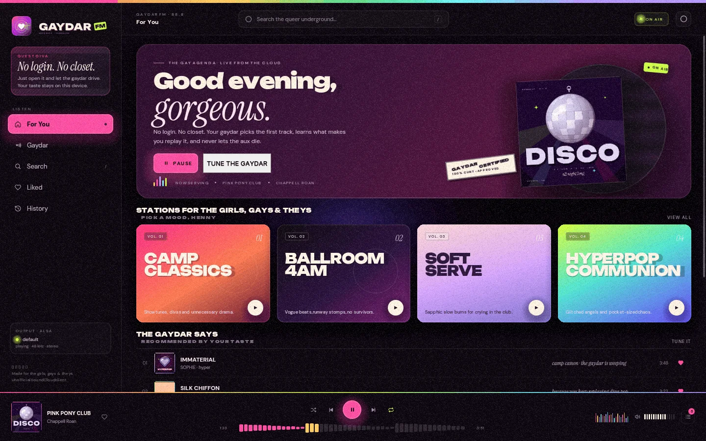
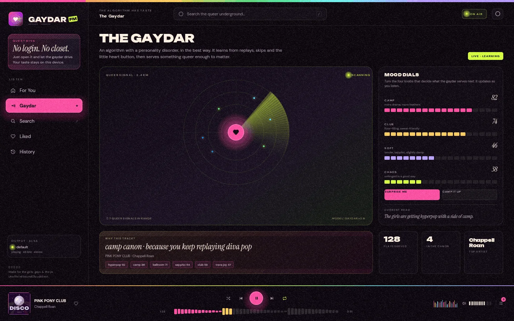
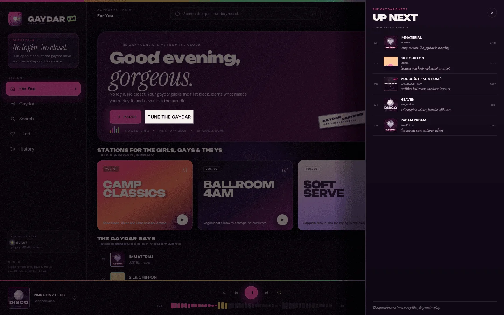

No login.
No closet.
A very queer SoundCloud radio for Linux. Rust, ALSA, and opinions.
Version 0.1.1 for Debian and Ubuntu amd64, 9.4 MB.
Eight screens, one window.
Captured from the release build, not a mockup.



Four dials, no questionnaire.
It scores from what you play, skip and like. These four bend the score.
Station presets
more drama, more feathers
louder, sweat, floorfill
tender, sapphic, slightly damp
unhinged in a good way
The reading
The girls are getting cabaret with a side of ballroom.
The app ships at 0.82, 0.74, 0.46 and 0.38. A reading, not a verdict.
MP3 or it doesn’t play.
Only uploads with an unencrypted MP3 stream reach the queue. Everything else is dropped first.
| The upload | Plays here |
|---|---|
| MP3, progressive | Yes |
| MP3 over HLS, unencrypted | Yes |
| AAC or ABR, FairPlay and Widevine | No |
| Blocked, snipped, or a preview | No |
| Under 45 seconds, over 45 minutes | No |
Major-label searches often come back empty. That is the filter doing its job, and this is not a SoundCloud replacement.
No browser in the signal path.
One Rust binary, three threads, and nothing between ffmpeg and the sound card.
-
SoundCloud
public API
-
The Gaydar
picks the queue
-
ffmpeg
decodes to PCM
-
ALSA
the device, at 48 kHz
Your plays, skips and likes feed the scorer. The state is plain JSON in ~/.local/share/gaydar.
BUI draws the window in C, with no browser engine behind it.
One command, then press space.
sudo apt install ./gaydar-fm_0.1.1_amd64.deb
Debian and Ubuntu, amd64, 9.4 MB. ffmpeg and the ALSA and X11 libraries are declared dependencies. The first launch needs an internet connection to find a public client ID.
- Spaceplay or pause
- ←previous
- →next
- /search
- Qqueue
- Llike
- Escgo back